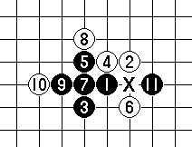
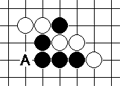
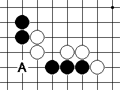

河村九段连珠讲座(九指禅魔译)
#1 河村九段连珠讲座(九指禅魔译) 作者：有志青年 发表时间：2008-12-4 21:50:35
[本文是由"日本连珠名人·河村典彦九段"，面向初级者·中级者的连珠讲座。
由九指禅魔应邀翻译，http://www.zhangqimeng.com/viewthread.php?tid=4659&page=1&extra=page%3D1
原文地址http://www.kyogo.org/contents/kouza.html
初级讲座
初级讲座(第1讲)～连珠是什么？～
初级讲座(第2讲)～进攻的各种尝试～
初级讲座(第3讲)～黑胜方法(1)～
初级讲座(第4讲)～黑胜方法(2)～
初级讲座(第5讲)～黑胜方法(3)～
初级讲座(第6讲)～黑胜方法(4)～
初级讲座(第7讲)～黑胜方法(5)～
初级讲座(第8讲)～白的打点～
初级讲座(第9讲)～白胜方法～
初级讲座(第10讲)～思想准备等～
中级讲座
中级讲座(第1讲)~中盘做棋的手段~
中级讲座(第2讲)~劣势下的行棋招法~
中级讲座(第3讲)~局面分析的重要~
中级讲座(第4讲)~妙手的寻找~
中级讲座(第5讲)~盘端问题的认识~
中级讲座(第6讲)~执白捉禁的手段~
中级讲座(第7讲)~拓展手的应用~
中级讲座(第8讲)~取得优势~
中级讲座(第9讲)~对连珠的终极思考~
继续~
译者的话:有志让我翻译河村典彦的讲座内容,上手之后才知道这个任务有多么的艰难.由于本人的日语水平和连珠水平都很一般,翻译工作几乎是不可能完成的任务.
盛情之下,只好尽力而为之.由于水平原因,内容难免有许多漏洞,欢迎大家批评指正,共同研究,不胜感激.
另外,上面很多内容是我暂时的译法,还没有最后敲定,希望大家谨慎阅读和转载.最后定稿之时,我会另行公布~/
#2 Re:河村九段连珠讲座(九指禅魔译) 作者：有志青年 发表时间：2008-12-4 21:51:49
◆初级讲座第1次～连珠是什么？～
你好。我是日本连珠社的河村。这次，决定写连珠讲座。我希望通过这个讲座能激发大家对连珠的兴趣，如果能可以帮忙大家提高水平那就更好了。我想本文主要由网络进行传播教学的，我会尽我所能写的通俗易懂。因为是初级编写,所以，关于叙述方面的技巧,还有所欠缺。如果大家读的过程中有什么不同的看法,欢迎指正。那么，第1讲开始。
○连珠是什么？
其实这个问题最难回答。一般以「调整五连棋的规则作为适合比赛的项目使之成为了现在的连珠」作为标准的回答,不过吧，这句话并没有阐明连珠的本质内涵的意义。如果要用我的话来说:「连珠是棋盘上的格斗技能」可能更准确些。「胜负的感觉与相扑相似」这么说一点不为过。想想瞬间的胜负交替，眼看胜利到手却在场地边缘被反败为胜，确实与连珠相似。总之是短兵相接，每一手棋的十分关键。因为每1局棋平均要交锋40手左右，跟围棋和象棋比,短平快的特征更加明显。所以每一手棋都十分的关键,每一手棋都是双方真刀真枪的对抗.故此我把连珠比喻为,以生命为代价的格斗技术.(译者:这和本人讲课时宣传的,五子棋就相当于流氓打架的观点是多么的相似啊,臭美下先)
#3 Re:Re:河村九段连珠讲座(九指禅魔译) 作者：有志青年 发表时间：2008-12-4 21:54:47
[○连珠和五连棋的差异
这里的五子棋是指民间规则玩法的五子棋
黑白都禁止走三々(不可以走的打点)
四々双方都可以
长连无效
这样的规则.总之没有表达出限制走三三的意义所在.没有指出，利用对方禁手取胜的想法。
譬如，试着看下面的例子吧。

前3手棋组成名叫斜月的开局,也是非常适合实战的局面.第4,6手都是正常的防御.7手活3以后,到9手再活3,10手走完以后,X点形成白棋禁止走的禁手.
如果11手黑棋走如图的位置,白棋该如何应对呢?由于禁手问题,白棋输的莫名其妙,这样的民间规则五子棋很不完善.
不论是连珠也好,民间五子棋也好,都希望规则是黑白势均力敌争胜负的游戏,所以连珠由于规则原因被更广泛的推荐使用.
○黑的四三胜，白棋的禁手胜！
连珠的规则，黑以四三以外不能取胜。换句话说,黑棋就是如何制作四三的游戏。那么，如何制作四三呢,那个用今后的讲座说明点吧。
同时，白四三，四々都可以取胜,不过，更多的问题出现在如何利用黑棋禁手取胜的方法。为了逼迫黑使之出现三々和四々，与长连的禁手胜的方法，有了这个使得连珠变得非常有趣。为此，白行棋思路与黑相当不同。最初的时候可能会想不清楚,不过，如果完全掌握了白的行棋方法，五子棋和连珠根本地不同的话就能理解了吧。
＜四三的图例＞
 
＜禁手的图例＞
#4 Re:河村九段连珠讲座(九指禅魔译) 作者：有志青年 发表时间：2008-12-4 21:55:31
○连珠的开局
连珠跟五子棋有很大的差异，从开局就有所体现。黑第一手走天元,白第二手走天元的周围，第三手棋,黑棋的限制决定了连珠和五子棋的不同。连珠规则限制为黑三距离天元三步远的地方。可是，五子棋这个规则不是这样的 ，黑三的走法更加自由.不过，我更希望大家学习正规的前3手连珠开局的。当然每个开局都有定式甚至必胜法,不过，那是后边的事了。我不推荐大家从最初只是记定式和必胜法的学习法，这样容易失去乐趣,遇到更多的挫折。我推荐从首先享受实战开始,因为兴趣才是最好的老师.
＜珠型的图例＞
浦月（ほげつ）
長星（ちょうせい） 
花月（かげつ）
疎星（そせい）
#5 Re:河村九段连珠讲座(九指禅魔译) 作者：极地剑客 发表时间：2008-12-5 15:38:05
曾经几年前翻译过~然后学习了~嘿~
#6 Re:河村九段连珠讲座(九指禅魔译) 作者：极地剑客 发表时间：2008-12-5 15:39:18
支持九九~~~~~~~~~~~~#7 Re:河村九段连珠讲座(九指禅魔译) 作者：有志青年 发表时间：2008-12-5 20:13:59
◆初级讲座第2讲～连续进攻的技巧～第二讲是以黑方作为攻击方做说明
成四三的准备
前回讲过了，黑除了四三没有其他的胜利方法。但是如何才能做出四三呢？为了成四三，那么，四和三都是必要的。相比之下，成四不成功的时候，成四的原料——成三更必要。总之，形成各种各样的三（引言中的三）是取胜的第一步。接下来学习成三吧。但是，怎么样才能顺利的成三呢？那么，需要制作作为三原料的二。因此，开局形成的二越多的山形一类的落子就被视为了很强的一手。
山形的例子。A和B都是恒星开局，不管白四在哪里防守黑5都能和山形组成组成很强的
一手。这就是，尽管这一手是定式，然而定式不记得了，光凭感觉也可以走出很强的一
手的道理。
C图也是黑七和自己开始的子力形成山形，从而成为很强的一手。
＜Ａ図＞

＜Ｂ図＞

＜Ｃ図＞

必胜定式已经完成了的花月和浦月也是，其被称之为黑必胜开局的最大理由就是可以形
成很多山形。
由于山形的重要,这里我们首先先学习下什么是山形.
#8 Re:河村九段连珠讲座(九指禅魔译) 作者：有志青年 发表时间：2008-12-5 20:16:14
○三的制作和防守方法
当黑棋有出现三的机会时。那时，到哪边去制作三是问题。大致只有2个有可供选择的方案,不过，不深思熟虑很容易出错。大原则，
去宽广的一方去制作三是正确的.试着看例子吧。
到黑棋7手为止,黑的形式很不错。白棋挡住了黑棋一个2,但是留下了黑棋另一个活2。当然，是想把这个2活成个活三的,不过，A，B哪边是正确的解答？

一般来说，就是白少的一方，在下棋时不要在意棋盘的大小，要牵引着对手的棋进行，因此，A是正解。一般的讲白先防住对方才是根本原则。不同的是，白10也成为正确的解答。这个形状继续让3和4过多(追胜)是不可以的,不过，如果白方用错做三的方法的话，黑棋就获胜了。白应该不知道追下取胜的方法，大概2分之一会弄错，要是有4个跳3，正确的追下的概率只有8分之1。初学者对局时做三，是追胜的方法，有阻挡的办法，胜负的一半就能明白了，今天还要劝告一下。良好的考虑活3，良好的考虑留下活3，什么也不考虑的把4留下《参考那威口诀。。。那个叫什么留3不冲变化万千》。对方冲4常时间考虑的人不多，因为，那样只会被对方嘲笑。考虑活3时，我觉得请提前记住。
○本讲的最后，练习题
今后为了确保大家学习效率,讲座的最后将出一些简单的联系题目。因为是简单的问题,所以轻松愉快地接受挑战吧。
【第１問】
黒棋的下一手是？
【第２問】
黒棋的下一手是？
【第３問】
白棋的下一手是？
译者:这一章小9感谢小7小6的帮助......数字帮无敌~
#9 Re:河村九段连珠讲座(九指禅魔译) 作者：阿花哥 发表时间：2009-1-6 0:33:34

#10 Re:河村九段连珠讲座(九指禅魔译) 作者：来客沙丝 发表时间：2009-3-10 22:47:08
日语和棋艺可以一起学了，谢谢！